Puerto Rico Travel Guide
Caribbean island and U.S. territory, offering a blend of rich culture, and stunning landscapes with diverse attractions, including pristine beaches, vibrant nightlife, and unique culinary experiences.


-400.jpg)

-400.jpg)
,_Mason_Street,_Cable-Car-Haltestelle_--_2022_--_2947-400.jpg)

Places to See in Puerto Rico

© Pierre André, CC BY-SA 4.0, via Wikimedia Commons; Image Size Adjusted
.JPG){kind=link}
San Juan
Capital of Puerto Rico, is a vibrant city that seamlessly blends rich history with modern culture and is known for its colorful colonial architecture, lively nightlife, and beautiful beaches.
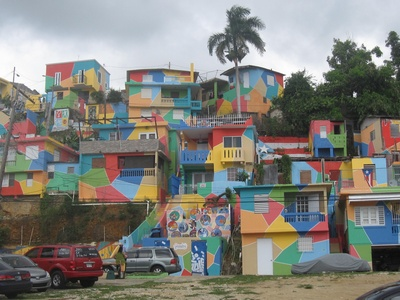
Dough4872, CC BY-SA 4.0, via Wikimedia Commons; Image Size Adjusted

Aguadilla
Coastal city known for surf beaches, stunning sunsets, and outdoor adventures on Puerto Rico's northwest coast

Dough4872, CC BY-SA 4.0, via Wikimedia Commons; Image Size Adjusted
Cabo Rojo Salt Flats
Striking pink salt flats at Puerto Rico's southwestern tip, a vital habitat for migratory birds
Dough4872, CC BY-SA 4.0, via Wikimedia Commons; Image Size Adjusted
Casas de Colores (Pintalto)
Vibrant hillside neighborhood in Aguadilla where brightly painted homes create a striking visual tapestry
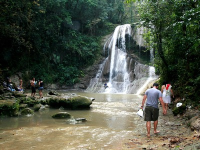
Dough4872, CC BY-SA 4.0, via Wikimedia Commons; Image Size Adjusted
Cascada Gozalandia
Twin waterfall with a natural swimming hole nestled in the hills of San Sebastián
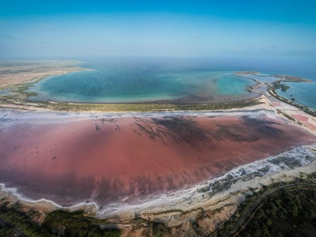
Dough4872, CC BY-SA 4.0, via Wikimedia Commons; Image Size Adjusted
Centro Interpretativo Las Salinas
Educational center exploring the ecology and history of Cabo Rojo's ancient saltwater lagoons
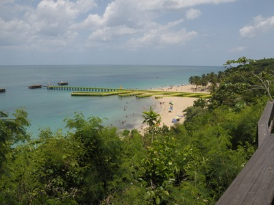
Dough4872, CC BY-SA 4.0, via Wikimedia Commons; Image Size Adjusted
Crash Boat Beach
Lively beach in Aguadilla centered on a colorful pier extending into crystal-clear turquoise water
Dough4872, CC BY-SA 4.0, via Wikimedia Commons; Image Size Adjusted
Cueva del Indio
Coastal cave with ancient Taíno petroglyphs carved into dramatic sea-carved rock formations along the north shore
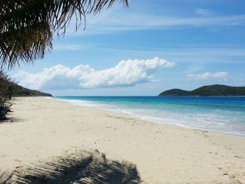
Dough4872, CC BY-SA 4.0, via Wikimedia Commons; Image Size Adjusted
Culebra
Small island off Puerto Rico's east coast known for world-class beaches, clear waters, and exceptional snorkeling
Dough4872, CC BY-SA 4.0, via Wikimedia Commons; Image Size Adjusted
El Portal de El Yunque Rainforest Center
Gateway visitor center for El Yunque National Forest with immersive rainforest education exhibits
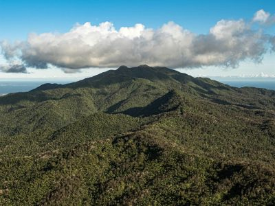
Dough4872, CC BY-SA 4.0, via Wikimedia Commons; Image Size Adjusted
El Yunque National Forest
The only tropical rainforest in the U.S. National Forest System, with waterfalls, hiking trails, and rare wildlife
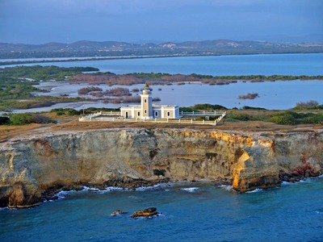
Dough4872, CC BY-SA 4.0, via Wikimedia Commons; Image Size Adjusted
Faro de los Morrillos
Historic 19th-century lighthouse atop dramatic sea cliffs at Puerto Rico's southwestern edge
Dough4872, CC BY-SA 4.0, via Wikimedia Commons; Image Size Adjusted
Finca El Girasol
Organic farm offering agrotourism experiences with scenic countryside views and fresh local produce
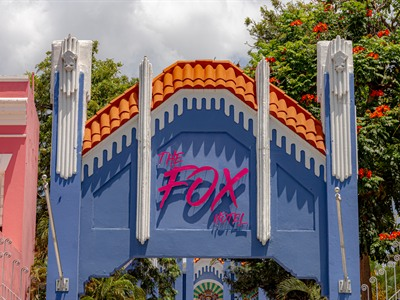
Dough4872, CC BY-SA 4.0, via Wikimedia Commons; Image Size Adjusted
Fox Hotel
Historic early-20th-century boutique hotel in Ponce preserving the city's architectural elegance
Dough4872, CC BY-SA 4.0, via Wikimedia Commons; Image Size Adjusted
La Parguera Bioluminescent Bay
Mangrove-lined bay where bioluminescent microorganisms cause the water to glow brilliantly after dark
Dough4872, CC BY-SA 4.0, via Wikimedia Commons; Image Size Adjusted
Las Pailas
Natural forest pools and cascading waterfalls hidden in the mountains near Adjuntas
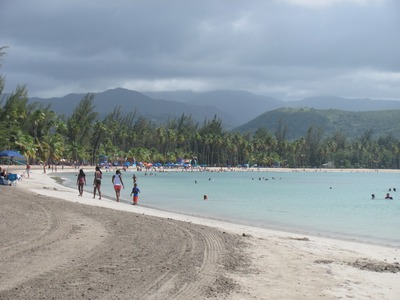
Dough4872, CC BY-SA 4.0, via Wikimedia Commons; Image Size Adjusted
Luquillo Beach
Calm, palm-shaded public beach on Puerto Rico's northeast coast, ideal for swimming and weekend relaxation
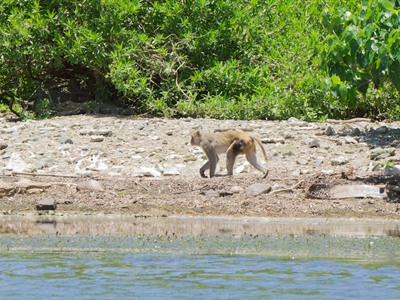
Dough4872, CC BY-SA 4.0, via Wikimedia Commons; Image Size Adjusted
Monkey Island (Cayo Santiago)
Small island off the east coast serving as a world-renowned research site for free-ranging rhesus macaques
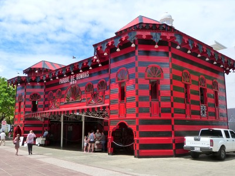
Dough4872, CC BY-SA 4.0, via Wikimedia Commons; Image Size Adjusted
Parque de Bombas
Striking red-and-black firehouse in Ponce's main plaza, now a beloved museum of firefighting heritage
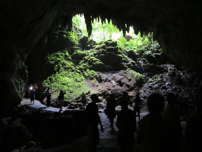
Dough4872, CC BY-SA 4.0, via Wikimedia Commons; Image Size Adjusted
Parque Nacional de las Cavernas del Río Camuy
One of the largest cave systems in the Western Hemisphere, carved over millennia by an underground river
Dough4872, CC BY-SA 4.0, via Wikimedia Commons; Image Size Adjusted
Paseo Tablado de Isabela
Scenic coastal boardwalk in Isabela with views of rugged cliffs and the open Atlantic
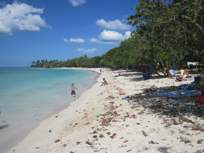
Dough4872, CC BY-SA 4.0, via Wikimedia Commons; Image Size Adjusted
Playa Buyé
Secluded crescent-shaped beach near Cabo Rojo with calm, clear water and natural palm shade
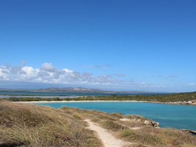
Dough4872, CC BY-SA 4.0, via Wikimedia Commons; Image Size Adjusted
Playa Sucia
Remote wild beach near the Cabo Rojo lighthouse with pristine waters framed by rugged coastal cliffs
Dough4872, CC BY-SA 4.0, via Wikimedia Commons; Image Size Adjusted
Playita Puente de Piedra
Small sheltered cove in Isabela framed by a picturesque historic stone bridge
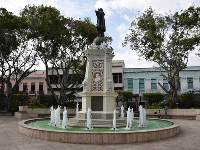
Dough4872, CC BY-SA 4.0, via Wikimedia Commons; Image Size Adjusted
Plaza Cristóbal Colón
Central plaza in Mayagüez featuring a Christopher Columbus statue and surrounding colonial architecture
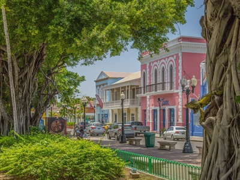
Dough4872, CC BY-SA 4.0, via Wikimedia Commons; Image Size Adjusted
Plaza Las Delicias
Ponce's elegant central square, lined with shade trees, fountains, and framed by the iconic Parque de Bombas
Dough4872, CC BY-SA 4.0, via Wikimedia Commons; Image Size Adjusted
Ponce
Puerto Rico's second-largest city, celebrated for its colonial architecture, vibrant culture, and rich artistic heritage
Dough4872, CC BY-SA 4.0, via Wikimedia Commons; Image Size Adjusted
Poza de la Cueva de Islote
Hidden natural pool formed within a cave near the north coast, a tranquil off-the-beaten-path escape
Dough4872, CC BY-SA 4.0, via Wikimedia Commons; Image Size Adjusted
Pozo de Jacinto
Natural blowhole on Puerto Rico's northwest coast where ocean waves surge through rock formations in dramatic bursts
Dough4872, CC BY-SA 4.0, via Wikimedia Commons; Image Size Adjusted
Puente La Bellaca
Photogenic historic bridge arching over a forest stream near Las Marías, a secluded nature destination
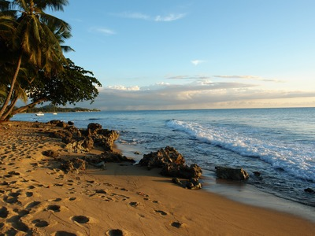
Dough4872, CC BY-SA 4.0, via Wikimedia Commons; Image Size Adjusted
Rincón
World-renowned surf town on Puerto Rico's west coast, famous for powerful waves and unforgettable Caribbean sunsets
Dough4872, CC BY-SA 4.0, via Wikimedia Commons; Image Size Adjusted
Ruinas del Fortín del Puerto Hermina
Atmospheric ruins of a small Spanish colonial fort overlooking the sea near Aguadilla
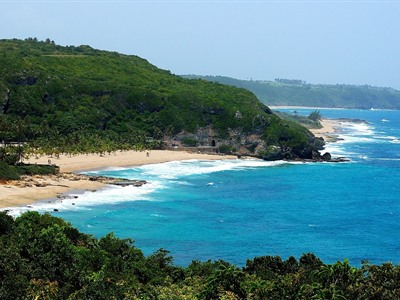
Dough4872, CC BY-SA 4.0, via Wikimedia Commons; Image Size Adjusted
Túnel de Guajataca
Early-20th-century railroad tunnel now open to pedestrians, winding through coastal jungle near Isabela
Dough4872, CC BY-SA 4.0, via Wikimedia Commons; Image Size Adjusted
Vieques
Serene island featuring bioluminescent bays, roaming wild horses, and some of the Caribbean's most pristine beaches
Overview
Puerto Rico is a Caribbean island territory of about 3.2 million people, an unincorporated commonwealth of the United States, with Spanish and English as official languages. San Juan is the capital and largest city, and the island's roots in Taino, Spanish, and African culture shape its music, food, and festivals.
Visitors come for the cobblestone streets and forts of Old San Juan, the beaches of the north and west coasts, and the bioluminescent bays at La Parguera and Vieques. Others come for surfing in Rincón, the island of Culebra and Flamenco Beach, the cave systems of the north, and food such as mofongo, lechon, and pasteles.
Geography
Puerto Rico is the smallest and easternmost of the Greater Antilles, about 100 miles long and 35 miles wide. The Cordillera Central runs east to west through the center, with Cerro de Punta, at 4,390 feet (1,338 m), the highest point, and narrow coastal plains lie to the north and south. The north is humid, with karst country, caves, and sinkholes, and the south is drier, with dry forests and salt flats. Vieques, Culebra, and Mona are offshore islands, and the Puerto Rico Trench, north of the island, is among the deepest parts of the Atlantic.
History
The Taino lived on the island they called Borikén when Columbus arrived in 1493. Spain settled it in 1508, and San Juan became a key fortress guarding the Spanish colonies. In 1898, Spain ceded Puerto Rico to the United States after the Spanish-American War, and residents received U.S. citizenship in 1917. Puerto Rico became a commonwealth in 1952, with its own constitution. Hurricane Maria in 2017 caused widespread damage and left a lasting mark on the island.
National Protected Areas
Puerto Rico's best-known national park site is San Juan National Historic Site, a UNESCO World Heritage Site that includes the forts El Morro and San Cristóbal and parts of the old city walls. Casa Blanca, built for the family of Juan Ponce de León, is also part of the site. National wildlife refuges, including Culebra, Vieques, and Cabo Rojo, protect beaches, mangroves, and seabirds, and the island's reefs and caves also have federal protection.
Commonwealth Parks and Historic Sites
Puerto Rico's commonwealth parks, reserves, and historic sites include the Río Camuy Cave Park, one of the largest cave systems in the world, and the Guajataca Tunnel on a former rail line. Cabo Rojo Salt Flats and the Los Morrillos Lighthouse sit on the dry southwest coast, Parque de Bombas in Ponce is a red-and-black firehouse landmark, and the Guanánica Dry Forest is a UNESCO biosphere reserve. Cueva del Indio has sea arches and petroglyphs.
Seasons and When to Visit
The dry season, from December to April, is the most popular time to visit, with sunny weather, winter surf in Rincón, and humpback whales offshore from January to March. Festivals include Three Kings Day on January 6 and the San Sebastián Street Festival in Old San Juan in mid-January. Hurricane season runs from June through November, and summer is hot and humid. Rain falls year-round in the mountains, and rental cars are useful for exploring beyond San Juan.
This article uses material from the Wikipedia article "Puerto_Rico", which is released under the Creative Commons Attribution-Share-Alike License 3.0. Additional information was drawn from National Park Service, Puerto Rico Department of Natural and Environmental Resources, and Discover Puerto Rico.